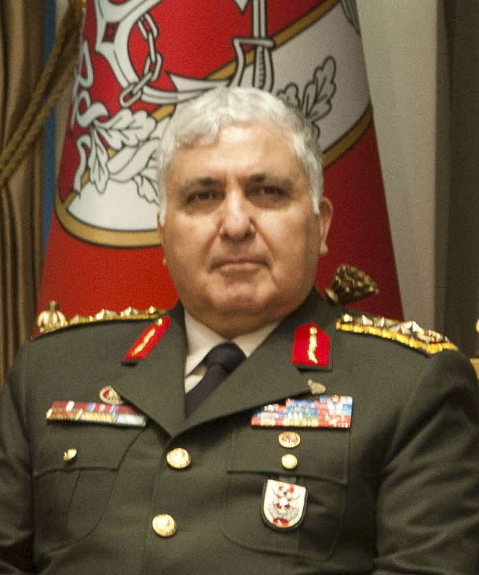

TİCARİ / SAHA
İnşaat, satış ve organizasyon
Satış, pazarlama, tercümanlık ve organizasyon; müşteri ilişkileri, saha iletişimi ve iş süreçlerinin koordinasyonu.
PROFESYONEL BİYOGRAFİ / MERSİN, TÜRKİYE
01 — PORTFOLIO
Bilişimden inşaata, teknik operasyonlardan ticari organizasyona uzanan çok yönlü bir çalışma geçmişi.

ÇOK YÖNLÜ MESLEKİ BİRİKİM
Farklı sektörlerde edindiğim deneyimi teknik beceri, saha pratiği ve organizasyon disipliniyle bir araya getiriyorum.
İnşaat, bilişim, elektronik, güvenlik sistemleri, sinema operasyonları, mobilya montajı ve temizlik-hijyen ürünleri alanlarında görev aldım. Satış ve pazarlama, piyasa araştırması, teknik servis, bakım-onarım, saha koordinasyonu, ürün araştırma-geliştirme ve sevkiyat/kurulum süreçlerinde sorumluluk üstlendim.
Farklı çalışma ortamlarına uyum sağlayan; ekip çalışması, problem çözme ve iş akışlarının düzenlenmesine önem veren bir çalışma anlayışına sahibim.
FARKLI SAHALAR, ORTAK SORUMLULUK
Deneyimler, özgeçmişte belirtilen görev alanlarına göre düzenlenmiştir. Tarihler doğrulanmadığı için sıralamaya eklenmemiştir.
Satış, pazarlama, tercümanlık ve organizasyon; müşteri ilişkileri, saha iletişimi ve iş süreçlerinin koordinasyonu.
Terörle mücadele, meskûn mahal uygulamaları ve yakın koruma eğitimleri; güvenlik prosedürleri, disiplin ve koruma faaliyetleri.
Elektronik sektörü, piyasa takibi, fiyat araştırmaları ve piyasa uzmanlığı alanlarında eğitim ve çalışma deneyimi.
Farklı işletme ve projelerde teknik sistemler alanında görevler. Mersin Serbest Bölge, Mersin Hali ve Mersin Uluslararası Limanı bünyesindeki çalışma ortamlarında deneyim.
Karayolları Genel Müdürlüğü 5. Bölge bünyesinde, Mersin/Erdemli (Kızkalesi) yol yapım şantiyesinde formenlik. Ağır vasıta ve iş makinelerinin bakım-onarımı, yedek parça temini ve saha koordinasyonu; beton laboratuvarı ve taş üretim ocağında uygulamalı deneyim.
Mobilya montajında satış, pazarlama, sevkiyat ve kurulum; temizlik ve hijyen ürünlerinde kimyasal ürün araştırması, saha incelemeleri ve piyasa fiyat analizleri.
Lisanslı film içeriklerinin takibi ve gösterim cihazlarına aktarılması, film kurulumu, altyazı kontrolleri ile görüntü ve perde ayarları.
Sunucu kurulumu, yerel ağ güvenlik protokollerinin uygulanması ve güvenlik yazılımlarının kurulumu ile yapılandırılması.
EĞİTİM GEÇMİŞİ
İlk ve orta öğretimden üniversite eğitimine uzanan öğrenim geçmişi.
İlk ve Orta Öğretim Okulu
Yerel Ağ İşletmenliği

Tece Kampüsü · Bilgisayar Teknolojisi ve Bilişim Sistemleri

BİLGİ · BECERİ · UYGULAMA
Teknik bilgi ile saha ve ticari süreçlerde edinilmiş uygulama deneyiminin birleşimi.
Elektrik-elektronik servis, bakım-onarım, bilgisayar donanımı ve dijital sinema sistemleri.
Ön muhasebe, satış-pazarlama, piyasa araştırması, fiyat analizi ve saha değerlendirmesi.
Şantiye koordinasyonu, mobilya montajı, sevkiyat, kurulum ve saha hizmetleri.
Web sitesi kurulumu, görsel tasarım, sosyal medya içerikleri ve üretken yapay zekâ araçları.
C++ · MS-DOS · Microsoft Office · Adobe After Effects · Logo · 3ds Max · Kali Linux · Editorial · E-System · Hyper-V
EĞİTİM VE YETERLİLİKLER
01 Yüzücülük ve Cankurtaran Sertifikası
02 Cisco Network Sertifikası
03 Genelkurmay Başkanlığı Yakın Koruma Sertifikası
04 Amatör Denizci Belgesi
05 C2 Work İngilizce Belgesi
İSİMLER VE GÖREVLER
Fotoğraflarla eşleştirilmiş, tarafınca belirtilen referans bilgileri.

Şırnak İl Emniyet Müdürü

Emekli Korgeneral

Emekli Orgeneral · Eski Genelkurmay Başkanı
GÖRSEL BELLEK
Kurumlar, çalışma sahaları, eğitim mekânları ve kişisel ilgi alanlarından seçilmiş fotoğraflar.
Türkiye İstanbul · İzmir · Ankara · Antalya · Aydın · Adana
İran Tahran / Afganistan Kandahar
METEHAN CANİK / PROFESSIONAL PORTFOLIO
Özgeçmiş bilgileri ve kişisel fotoğraf arşivinden hazırlanan profesyonel portföy.
Başa dön ↑